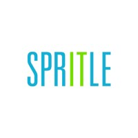
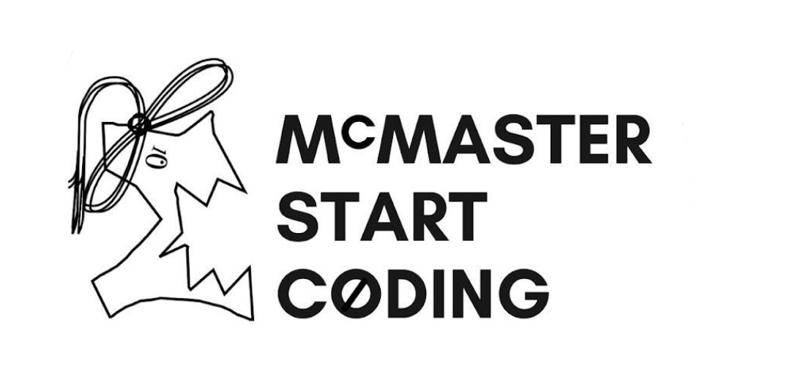

Experience
CLICK ON A CATEGORY BELOW TO NAVIGATE TO THAT SECTION
Spritle
Software Developer & Project Manager
Developed and implemented an AI-driven solution using Python for Singapore’s Changi Airport’s Fault Management Center. The solution handles speech-to-text transcription, language identification and translation, categorization, and automatic ticket creation and handling, significantly reducing manual effort and boosting efficiency. As a result, automation led to a 50% reduction in manual staff involvement, greatly enhancing overall productivity.
Initially tested with AWS Transcription Tools, the solution was then transitioned to OpenAI's Whisper based on my recommendation, improving transcription accuracy from 70% to 95%. Collaborated closely with clients to gain insights into their specific needs and tailored the solution to effectively meet those requirements.
Managed project timelines, deliverables, and documentation, ensuring adherence to deadlines. Coordinated daily task update meetings and served as liaison between the offshore team and onshore client, ensuring clear communication. Utilized Excel and Tableau to track project progress and present data effectively. Demonstrated strong communication skills in aligning stakeholder expectations and facilitating collaboration.
McMaster University
Start Coding Camp

Volunteer
Designed educational illustrations: Created engaging Elm-based visuals for a children's reading game, incorporating Picasso-style elements to enhance learning. Gained exposure and improved skills in front-end development, Elm programming, problem solving, and creative thinking.
Reviewed UI Toolkits thesis: Provided constructive feedback on thesis work under the supervision of Dr. Christopher Anand, improving attention to detail and collaboration skills.